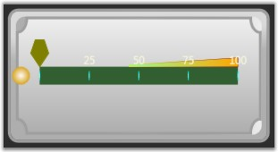
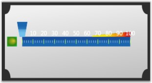
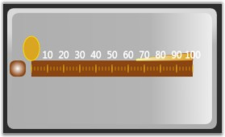
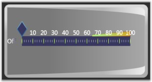

Linear gauge contains variety of built-in frame types to provide effective rim styles. You can also customize the built-in frames. Following built-in frame types are available in linear gauge.
· BoltedRectangle—Linear Gauge with default template will be displayed as Bolted Rectangle.
· CroppedRectangle—Linear Gauge with default template will be displayed as Cropped Rectangle.
· Rectangle—Linear Gauge with default template will be displayed as Rectangle.
· RoundedRectangleWithInnerGradient—Linear Gauge with default template will be displayed as Rounded Rectangle With Inner Gradient.
The following code example illustrates how to set the frame type for the Linear Gauge.
|
[XAML]
<!--Linear gauge with frame type as Rectangle.--> <syncfusion:LinearGauge x:Name="linearGauge1" FrameType=" Rectangle"/> |
|
[C#]
<!--Linear gauge with frame type as Rectangle.--> LinearGauge linearGauge1 = new LinearGauge(); linearGauge1.FrameType = LinearGaugeFrameType.Rectangle; |
The following screens shots illustrate the different kinds of linear frame types available in the gauge library.

Figure 62: Linear Gauge with "BoltedRectangle" Frame

Figure 63: Linear Gauge with "CroppedRectangle" Frame

Figure 64: Linear Gauge with "Rectangle" Frame

Figure 65: Linear Gauge with "RoundedRectangleWithInnerGradient" Frame